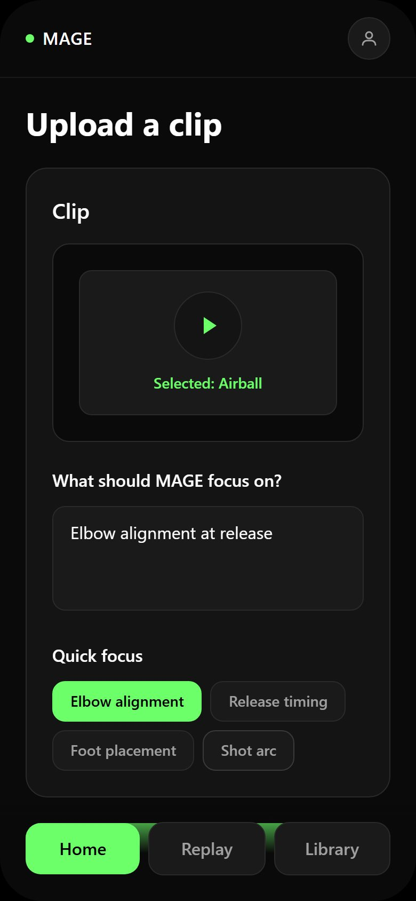
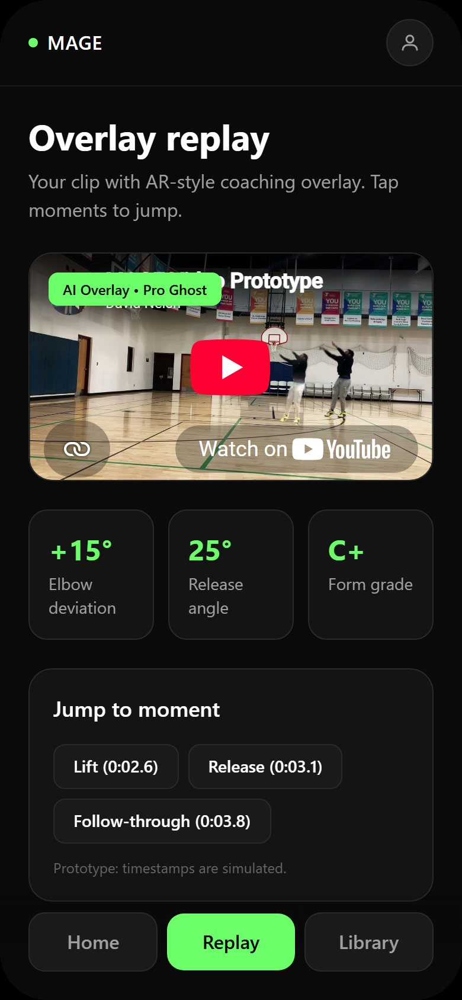
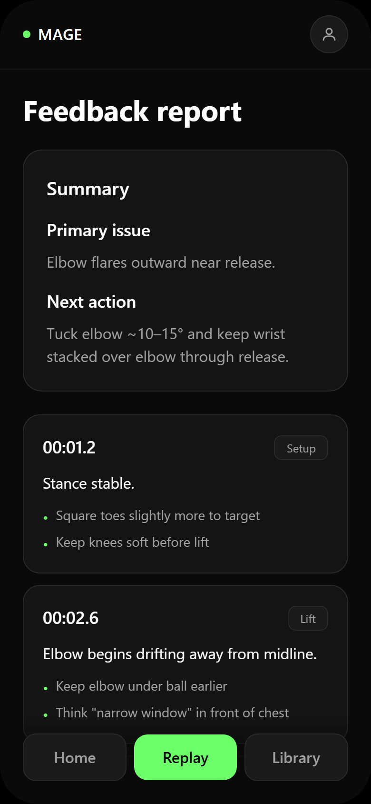

He scrolls highlights and generic tips between shots. It is inspiring and impersonal. Nothing in it explains his elbow.
He uploads one clip. The system finds the release frame and draws the correct elbow line over his actual arm. Abstract advice becomes his shot.
Coaching works because someone watches you and tells you the one thing to change while you can still feel what you just did. It is expensive, so most people practising alone never get it. Self-recording looks like the substitute, but it opens a gap between the action and the insight, and the gap is where the learning leaks out.
What it is
Three screens. You name what to look at, the answer comes back drawn on the clip, and the long version is there if you want it.



Prototype, not a shipped app. The clip is a sample and the numbers on it are scripted, which the prototype says on its own screen. What is real is the interaction: what you are asked for, what comes back, and in what order.
The decision that made it work
Narrowing from a universal coach to one sport and one joint. A system that grades every movement badly is worse than one that grades an elbow well, and elbow angle at release is both measurable and coachable.
Testing mid-practice changed the design
The paper version was role-played with people who were actually shooting, not with people at a desk. That surfaced something a screen review would have hidden: reading a report while holding a basketball does not work. The attention is already spent. So the feedback moved onto the video.
Ashley, 27, then worked through the click-through version without being told what it did. The overlay landed immediately, before any real video was playing. The report did not. She did not want to scroll it, she wanted to click a timestamp and jump to the moment.
That is the useful kind of finding, because it contradicts the obvious build. A full analysis report feels generous and reads as work. It is why the moments are buttons on the second screen and the document is the third.
AI was good at the breadth here: ten ideas, then ten more, then a technical blueprint faster than sketching one. It was no help on the two judgement calls that mattered, which were cutting the scope down to an elbow and noticing that a person holding a ball has no attention left to read.
What it takes to run
The phone is the sensor. It sits on a tripod so the whole body stays in frame, because a cropped ankle breaks the pose estimate. From there the video becomes a digital skeleton, a stream of joint coordinates, and everything downstream reasons over those numbers rather than over pixels.
The router is the part that generalises. Basketball is the first domain, not the only one; the same pipeline accepts a golf swing or a yoga pose by loading a different model, without a restart. That is why the hardware target is heavy on memory rather than raw speed, so several domain models can stay resident and switch instantly.
What I would build first
One sport, one joint, asynchronous. Upload a clip, wait, get an overlay back. Real time is the eventual promise but it is not the thing to prove first. The thing to prove is that a person who missed ten shots gets one sentence about their elbow and makes the eleventh.